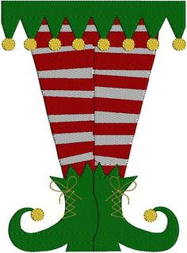

My Spectacular Adventures and Interests
EXPERIENCE AND ADVENTURES
- I'm really good at creating etch-a-sketch toys
- My favorite is making snow angels
- I'm a great whisperer
- Skilled skipper
INTERESTS
- Smiling
- Eating sugar, sugar, sugar
- Playing with maple syrup
- Picking Snowberries
- Saying the name "Francisco"
- Drinking the "world's best cup of coffee"
- Chillin' with Santa
- Decorating
- Getting hit by yellow cabs